카테고리 제작 목적 : 마인크래프트가 유투브 컨텐츠 제작 및 새로운 세계관과 관계 모델링을 보여주는 툴로 활용되는 시작점인 지금 창작자 여성들이 다양한 마인크래프트 모드를 쉽게 접하고 활용할 수 있도록 한글로 정보를 제공하여 전체적인 접근도 향상에 기여하는데 그 목적이 있다. 개개의 모드를 상세히 설명하는 하위 문서를 먼저 만든 후 마인크래프트 전체 모드문서를 생성할 예정.
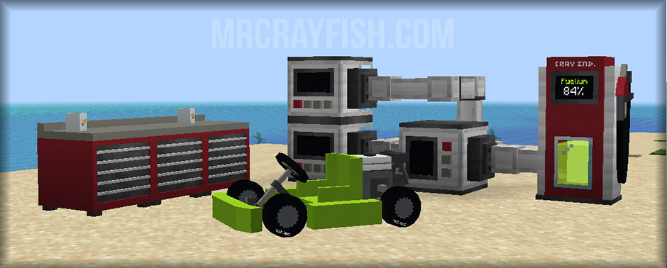
마인크래프트 모더 Mrcrayfish가 만든 탈것 모드. 이륜차와 사륜차, 비행기, 배를 게임 내에서 제작 및 도색하거나 탑승하여 타고 다닐 수 있다. 현 버전 1.15.2까지 지원되며, Obfuscate 모드를 모드 폴더에 함께 넣어야 실행된다.
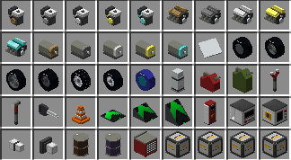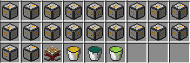
소형 엔진, 대형 엔진, 전기구동 엔진, 패널, 타이어, 스프레이 캔, 연료통, 렌치, 해머, 열쇠, 교통 고깔, 가속 패드, 가속 경사로, 가스 펌프, 연료 추출기, 연료 혼합기, 연료 파이프, 연료 펌프, 연료 드럼통, 산업용 연료 드럼통, 작업대, 각종 탈것 박스, 차량용 잭, 블레이즈 추출액 양동이, 엔더 추출액 양동이, 연료 양동이로 구성되어 있다. 원하는 모터와 타이어, 염색약을 조합한 후 작업대(제작대가 아니다)에서 합치면 탈것 박스가 만들어지는데 그걸 바닥에 내려놓으면 된다. 탈것을 옮기고 싶을 경우 쉬프트를 누른 상태에서 오른쪽 클릭하면 탈것을 머리 위로 들어 옮길 수 있다. 내려놓고 싶은 위치 앞에서 쉬프트를 누르고 오른쪽 클릭하면 바닥에 던져진다. 차량에는 연료를 주입하여야만 시동이 걸리며, 자신만 타고 싶을때는 열쇠로 잠궈야 한다. 탈것의 색을 변화시키고 싶을 때는 스프레이에 염료를 조합하면 된다. 14가지 기본색1 뿐 아니라 여러 염료를 섞어 다양한 색을 만들 수 있다.
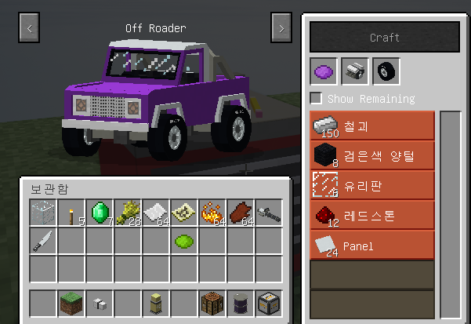
작업대(제작대가 아니다)에서 원하는 모터와 타이어, 염색약을 넣은 후 요구하는 다른 재료들을 인벤에 보유한 채 Craft 버튼을 누르면 탈것 박스가 만들어지는데 그걸 바닥에 내려놓으면 차량이 생긴다.
소형 엔진 : 알루미늄 보트, ATV, 고카트, 제트 스키, 잔디깎기, 미니 바이크, 모패드, 쇼파에 들어가는 엔진.
대형 엔진 : 오프 로더, 스피드 보트, 경비행기, 트랙터에 들어가는 엔진.
전기 엔진 : 범퍼카, 골프 카트, 스마트 카, 소파콥터에 들어가는 엔진.
| 엔진 종류 | 나무 엔진 | 돌 엔진 | 철 엔진 | 금 엔진 | 다이아 엔진 |
| 일반 가속 | 0.75x | 1.0x | 1.25x | 1.5x | 1.1x |
| 최대 가속 | -7.2kph | 0.0kph | 3.6kph | 10.8kph | 21.6kph |
레이싱 타이어 : 평평한 도로용
오프로드 타이어 : 산악용
빙판길 타이어 : 눈이나 빙판길용
모든 지역용 타이어 : 모든 지역용
플라스틱 타이어 : 파란색 타이어
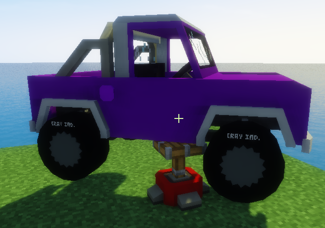
해머로 탈것을 수리하거나 렌치로 엔진/바퀴와 같은 부품을 바꿔 끼울 때 사용한다. 쉬프트를 누른 채로 수리/개조할 탈것을 우클릭하면 탈것을 머리 위로 들 수가 있는데, 잭 위에 대고 쉬프트를 누른 채 우클릭을 하면 위와 같이 잭에 차량이 고정된다. 해머나 렌치를 손에 든 채 오른쪽 클릭하면 차량을 수리/개조 할 수 있다.
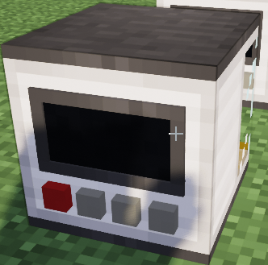
1. 즙짜내기 기계 연료 추출기 두 개를 설치한다.
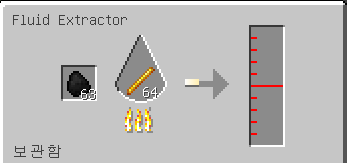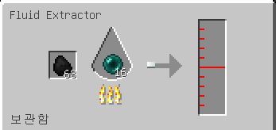
2. 각각에 연료가 되는 석탄과 재료가 되는 블레이즈 막대기/엔더진주를 넣는다
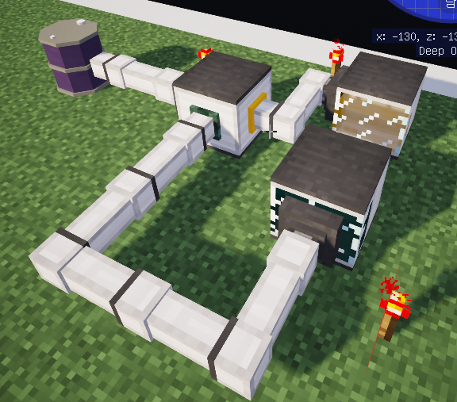
3. 추출된 연료를 연료 혼합기에 연결한 후, 혼합되어 완성된 연두색 연료를 드럼통에 담기게 하면 된다.
연료 추출기에 연료 펌프를 붙인 후(쉬프트를 누른 채 붙임), 연료 추출기와 연결된 연료 펌프 끝을 연료 파이프로 이어서 엔더진주 연료는 연료 혼합기의 진녹색 부분에, 블레이즈 막대 연료는 연료 혼합기의 노란색 부분에 연결하면 된다. 오디오 잭을 꼽는다고 생각하면 편하다. 연료 혼합기의 연두색 부분에 연료 펌프를 설치한 후, 드럼통까지 연료 파이프로 이으면 된다. 쉬프트를 눌러 드럼통의 연료 잔량을 확인할 수 있다. 연료 펌프는 레드스톤 신호가 있어야 작동하므로 연료 추출기에 레버를 설치해 당겨주거나 레드스톤 횃불을 놓아야 한다. 아니면 렌치를 손에 들고 쉬프트를 누른 채 오른쪽 클릭을 해도 된다.
만들어진 연료를 연료통(제리캔)에 담아 탈것의 주유구에 대고 클릭하면 연료를 주입할 수 있다.
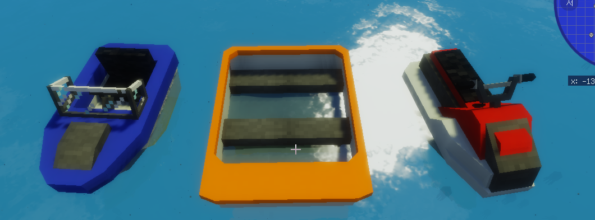
왼쪽부터 스피드 보트, 알루미늄 보트, 제트 스키
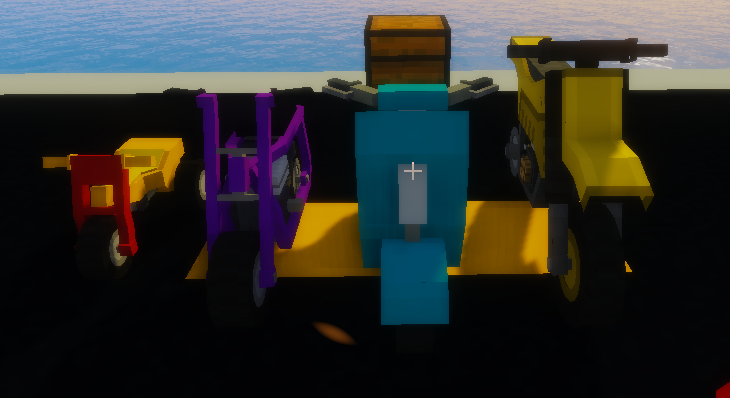
왼쪽부터 듄 버기, 미니 바이크, 모패드, 오토바이. 모패드에는 상자를 설치(쉬프트 누르고 설치)해 아이템을 넣고 다닐 수 있다.
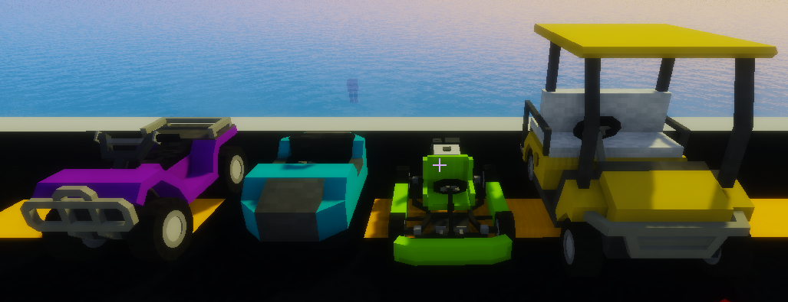
왼쪽부터 ATV, 범퍼카, 고카트, 골프 카트
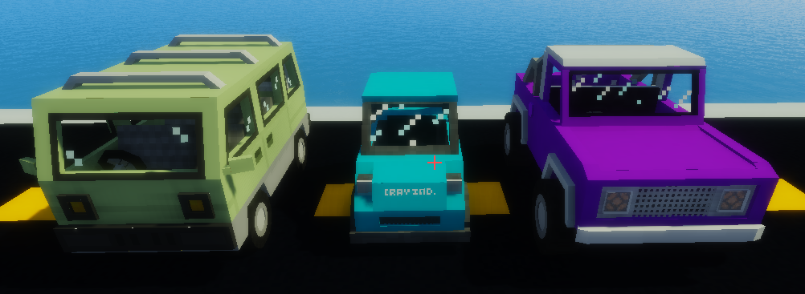
왼쪽부터 미니 버스, 스마트 카, 오프 로더
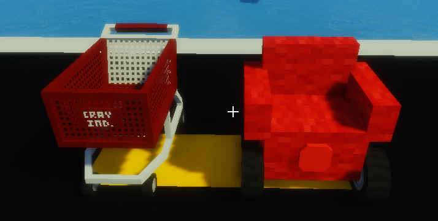
왼쪽부터 쇼핑 카트, 소파
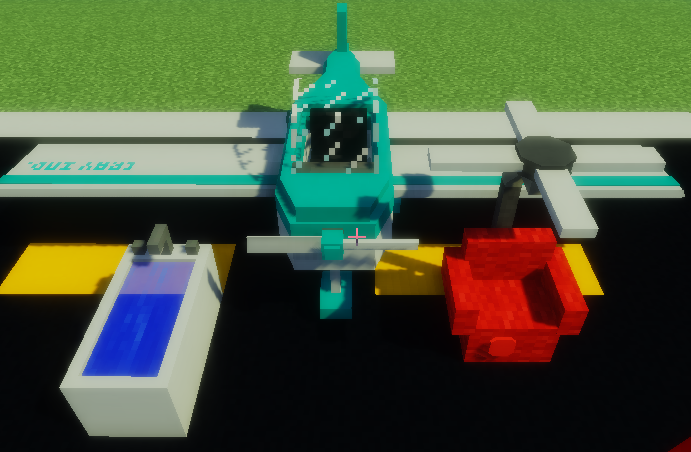
왼쪽부터 욕조, 경비행기, 소파콥터
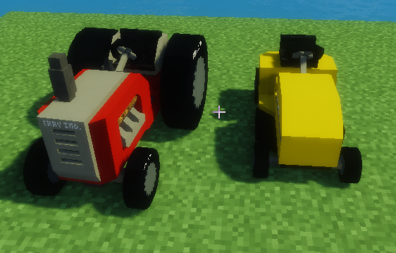
왼쪽부터 트랙터, 잔디깎기 기계(풀을 벨 수 있다)
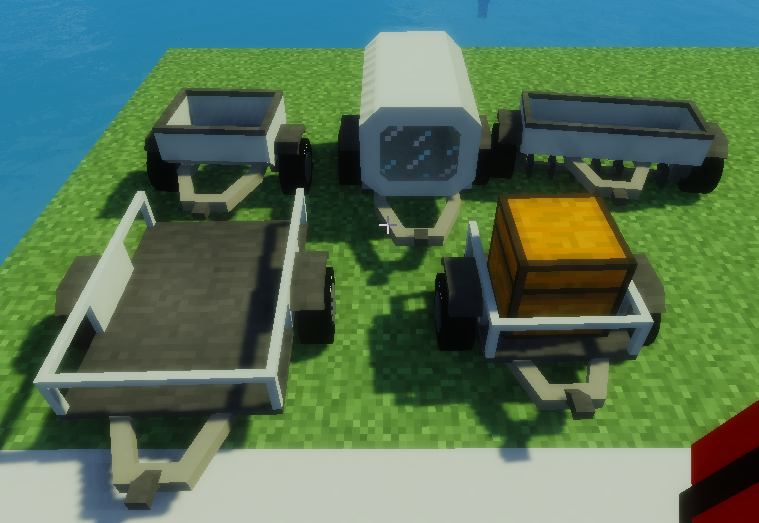
왼쪽 상단 부터 비료급여기(뼛가루 급여), 연료 트레일러(연료 보관 및 이동), 모내기 기계(씨앗을 넣으면 심어짐), 차량 이동기(차량을 올려 이동시킬수 있음), 상자 이동기(상자를 이동시킬수 있음)
위의 모든 짐칸 차량은 뒤쪽에 고리가 달린 4륜차2 에 연결하여 끌고 다닐 수 있다. 짐칸 차량의 고리부분을 오른쪽 클릭하고 4륜차 후방에 달린 고리 앞으로 끌고 간 후, 마찬가지로 4륜차에 달린 고리를 오른쪽 클릭하면 연결된다. 쉬프트를 누른 채 오른쪽 클릭을 하면 끌고 가던 짐칸 차량이 내려놔진다.